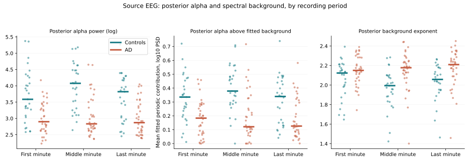
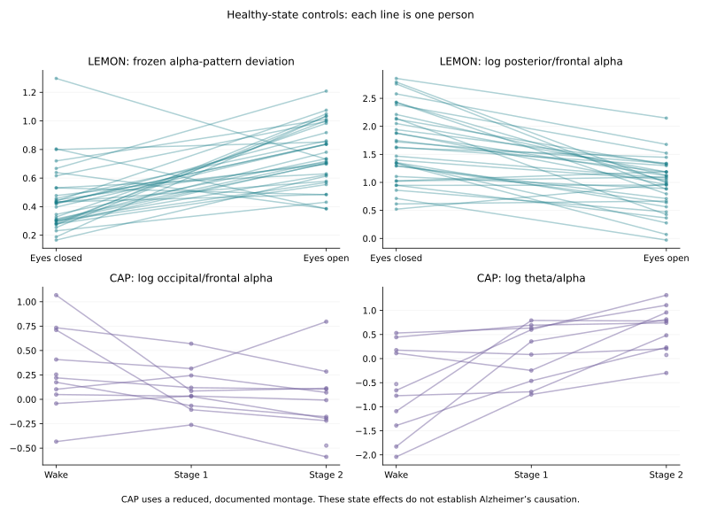

Source spatial finding
Posterior absolute alpha was lower in AD across first, middle, and last one-minute periods after correction. These are stability checks within the same cohort, not independent replications.
ADAP studies posterior alpha power and scalp-pattern differences in Alzheimer's disease recordings, then challenges their interpretation using spectral modeling, individualized frequency bands, and healthy eye-condition and sleep-state controls.
September 14, 2026 control package. Exploratory research; clinical diagnostic performance and Alzheimer specificity have not been established.
Read the illustrated control reportExplore the code and data records19 electrode positions · schematic, not measured brain activity
Posterior absolute alpha was lower in AD across first, middle, and last one-minute periods after correction. These are stability checks within the same cohort, not independent replications.
The frozen score increased in 30 of 34 paired older healthy participants. Mean change: 0.322; pointwise 95% CI 0.212–0.421; Holm-adjusted p ≈ 0.0008.
Stage-2 theta/alpha increased in 11 of 11 eligible participants. Mean log-ratio change: 1.224; pointwise 95% CI 0.764–1.701; Holm-adjusted p ≈ 0.004.
AD-versus-FTD contrasts did not survive correction. Candidate peak-frequency differences did not survive correction. Background-adjusted spatial differences were not consistently significant across all three periods. The original eight-second spectra failed the fixed spectral-model quality gate; their fitted parameters are not interpreted.
These findings support an association and demonstrate physiological state sensitivity. They do not identify cholinergic injury, synaptic loss, amyloid/tau mechanisms, or impaired AD alpha reactivity.
These figures come from the versioned control package. The interactive demo below is separate and synthetic.


A posterior fitted peak within 4–14 Hz defined a ±2 Hz integration band. This was an exploratory analysis added after the fixed-band findings; sub-8 Hz peaks are not automatically identified as slowed alpha.
| Source period | AD / control n | Median log-ratio difference | Holm-adjusted p |
|---|---|---|---|
| First 60 s | 33 / 29 | −0.4155 | 0.000351 |
| Middle 60 s | 33 / 28 | −0.6640 | 0.00000235 |
| Last 60 s | 35 / 29 | −0.5413 | 0.0000796 |
| Dataset | Sample | Role |
|---|---|---|
| OpenNeuro ds004504 v1.0.9 | 36 AD, 29 controls, 23 FTD | Source spatial, spectral, and disease-comparison analyses |
| Florida OSF | 80 AD, 12 controls | Original eight-second recordings; no longer recordings assumed |
| MPI-LEMON | 74 older candidates; 34 paired participants included | Healthy eyes-closed / eyes-open sensitivity |
| CAP Sleep Database | 16 candidates; 11 eligible recordings | Wake / S1 / S2 state sensitivity; paired n varies |
Signals are analyzed at 128 Hz. Welch spectra use eight-second Hann windows, with 50% overlap for longer recordings. Canonical alpha integrates frequency bins from 8 Hz inclusive to 13 Hz exclusive.
The frozen score is 1 − Pearson correlation between a participant's 19-channel relative-alpha map and the source-control mean map. The regional contrast is ln(mean posterior alpha / mean frontal alpha). Posterior channels are P3, P4, Pz, O1, O2; frontal channels are Fp1, Fp2, F3, F4, F7, F8, Fz.
FOOOF 1.1.1 separates fitted periodic peaks from a fixed aperiodic background over 2–30 Hz. Fit quality requires R² ≥ 0.8 and mean absolute log10 error ≤ 0.15. Participants, not windows, are the inferential units. Group tests use Mann–Whitney with Holm correction over 81 comparisons; healthy-state tests use 10,000 sign flips with Holm correction over eight comparisons. Confidence intervals use 5,000 participant bootstraps and are pointwise.
Complete mathematical definitions · Recorded plan · CAP amendment
Read the manuscriptRead the September 14 control report
The full ADAP manuscript documents the September 14 control package, equations, dataset selection, results, negative findings, and reproducibility limits. Author: Luis Minier, Independent Researcher and Student; no institutional affiliation.
Download manuscript source · Current control findings · Literature context
Large EEG inputs are acquired from their original public sources rather than redistributed in this Git repository. Run python3.12 reproduce.py to create an isolated environment, download the pinned inputs, verify all 423 original package hashes, run the analysis, and compare the resulting CSV tables with the frozen reference tables. The repository includes source URLs, source-file checksums, extraction receipts, and the acquisition code. A complete independent end-to-end numerical replication has not yet been completed.
python3.12 reproduce.py
Already have the control pack? Use python3.12 reproduce.py --control-pack /path/to/Minier_EEG_Control_Runs.zip. The recovered pack passes all 423 SHA-256 checks. Full reproduction instructions · Pinned acquisition manifest · Package checksums
Retrospective selection, small control cohorts, peak-related exclusions, recording/reference differences, and unresolved vigilance or clinical confounding limit interpretation. CAP is a state-sensitivity analysis, not a quantified worst-case microsleep bound. No prospective diagnostic or causal validation is claimed.
Synthetic signals only. This preserves the proposed interface's original illustrative formulas, including its 8–12 Hz fixed band and unfinished scalp contour. It does not calculate the research results shown above.
Open and share the interactive demo